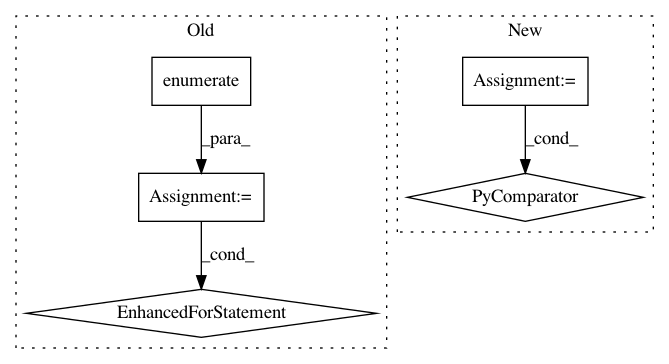

0588c1499059ca17db7bc72de5e8783f479a495e,softqlearning/value_functions/value_function.py,MeanQFunction,output_for,#MeanQFunction#Any#Any#Any#,78
Before Change
def output_for(self, observations, actions, reuse=False):
outputs = []
for i, q_function in enumerate(self.q_functions):
outputs.append(
q_function.output_for(observations, actions, reuse=reuse))
output = tf.add_n(outputs)
return output
def _eval(self, observations, actions):
After Change
def output_for(self, observations, actions, reuse=False):
outputs = [
qf.output_for(observations, actions, reuse=reuse)
for qf in self.q_functions
]
output = tf.add_n(outputs)
return output
In pattern: SUPERPATTERN
Frequency: 3
Non-data size: 5
Instances
Project Name: rail-berkeley/softlearning
Commit Name: 0588c1499059ca17db7bc72de5e8783f479a495e
Time: 2018-02-24
Author: haarnoja@berkeley.edu
File Name: softqlearning/value_functions/value_function.py
Class Name: MeanQFunction
Method Name: output_for
Project Name: rail-berkeley/softlearning
Commit Name: 39784035924760e69ec50ab6ab29c8666a595eec
Time: 2018-08-22
Author: kristian.hartikainen@gmail.com
File Name: softlearning/replay_pools/replay_pool.py
Class Name: ReplayPool
Method Name: add_path
Project Name: rail-berkeley/softlearning
Commit Name: 74ff03f3c373703439c3ed6bada477812f25bc96
Time: 2018-08-23
Author: kristian.hartikainen@gmail.com
File Name: softlearning/replay_pools/replay_pool.py
Class Name: ReplayPool
Method Name: add_path